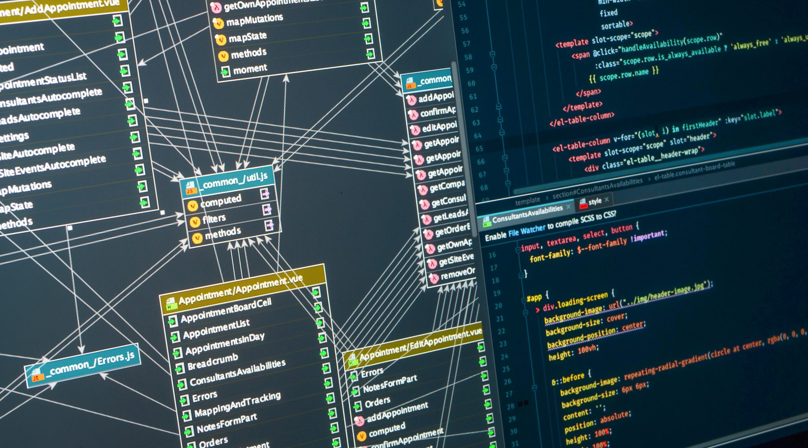
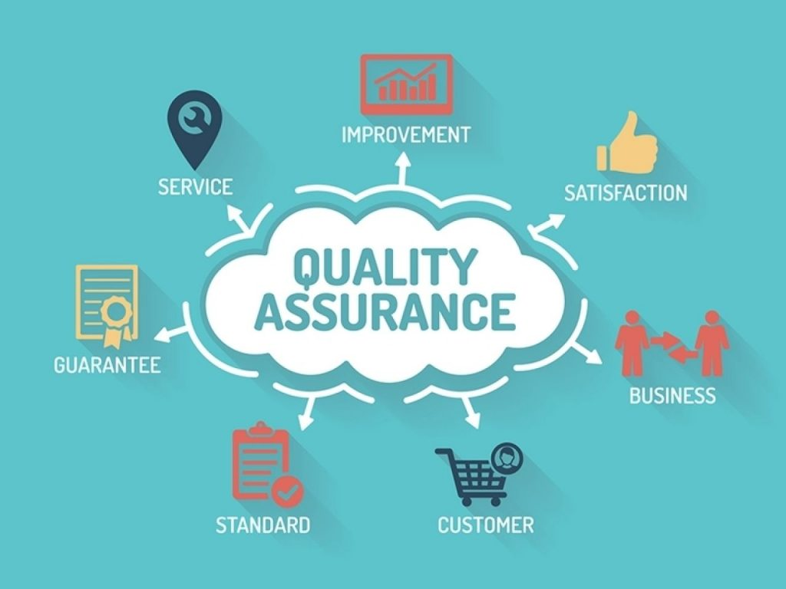
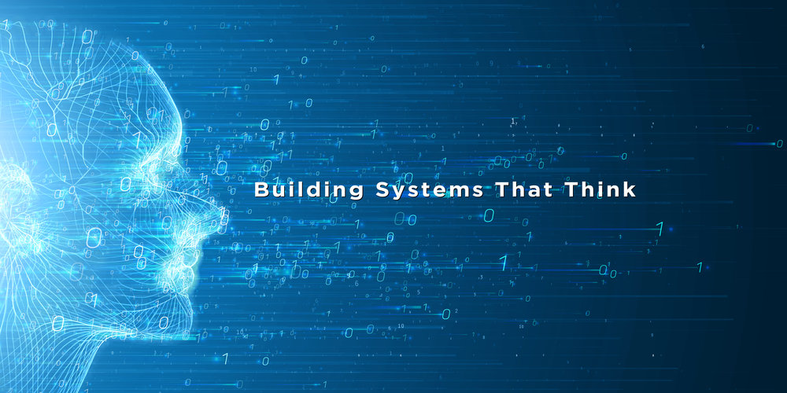
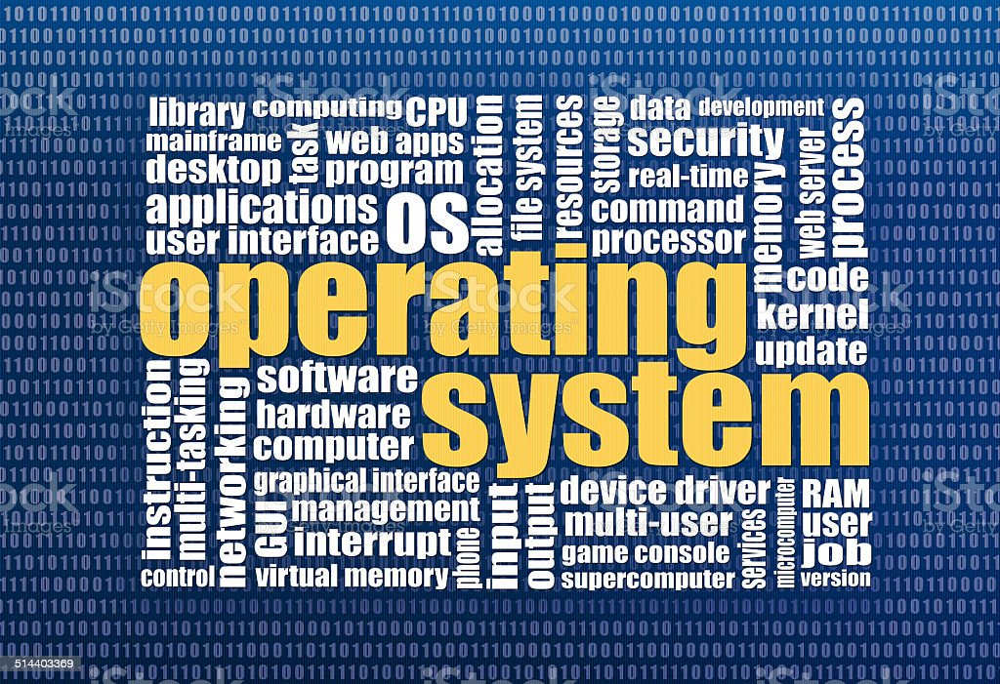

PROFESSIONAL LEVEL-01SOFTWARE CONSTRUCTION

- Web Programming 4 Months
- Web Framework 2 Months
- Database Design, Development and Administration 2 Months
- Data Warehousing and Data Mining 1 Months
- Graphics Design and Tools 2 Months
- UI and Web Design 1 Months
- Software Development Essential Months
PROFESSIONAL LEVEL-02SOFTWARE ARCHITECT
- Web Technology and Architecture 2 Months
- Client-Server Architecture and Middleware 2 Months
- Cloud Architecture and Development 2 Months
- Software Engineering 2 Months
- Software Architecture 2 Months
- System Analysis and Design 2 Months
- Interaction Architecture and UX Design Months
PROFESSIONAL LEVEL-03SOFTWARE QUALITY ASSURANCE
- Software Requirements 2 Months
- Software Metrics 2 Months
- Software Testing and Quality Assurance 2 Months
- Software Fault Tolerance System 2 Months
- Software Project Management 2 Months
- Software Documentation 2 Months
- DevOps Engineering Months
PROFESSIONAL LEVEL-04SOLUTION ARCHITECT

- Data Structure and Algorithms 2 Months
- Parallel Computing and Distributed System 2 Months
- Data Communication and Networking 2 Months
- Cryptographic Architecture and Secure Software 2 Months
- Numerical Method and Theory of Computation 2 Months
- Engineering Mathematics - Part 1 2 Months
- C++ Package, Build System and Web Assembly Months
PROFESSIONAL LEVEL-05INTELLIGENT SYSTEM
- Artificial Intelligence 2 Months
- Machine Learning 2 Months
- Neural Networks and Fuzzy System 2 Months
- Pattern Recognition and Natural Language Processing 2 Months
- Probability and Statistics 2 Months
- Engineering Mathematics - Part 22 Months
- Data Science Months
PROFESSIONAL LEVEL-06SYSTEM OPERATION-1
- Digital System and Logic Design 2 Months
- Computer Architecture and Assembly Language 2 Months
- Operating System and System Programming 2 Months
- Communication and Computer Network 2 Months
- Computer Graphics 2 Months
- Engineering Mathematics - Part 32 Months
- Compiler Design Months
PROFESSIONAL LEVEL-07SYSTEM OPERATION-2
- Microprocessor and Interfacing 2 Months
- Micro-controller and Embedded System Programming 2 Months
- Digital Image Processing 2 Months
- Simulation and Modeling 2 Months
- Algorithm Engineering 2 Months
- Robotics 2 Months
- Electrical and ElectronicsMonths
| Construction 1WEB PROGRAMMING | ||
|---|---|---|
| 01 | W3Schools - JavaScript | BOOK |
| 02 | W3Schools - TypeScript | BOOK |
| 03 | W3Schools - NodeJS | BOOK |
| 04 | W3Schools - HTML | BOOK |
| 05 | W3Schools - CSS | BOOK |
| 06 | W3Schools - SASS | BOOK |
| 07 | W3Schools - HTML Graphics | BOOK |
| 08 | W3Schools - XML | BOOK |
| 09 | W3Schools - Web Development | BOOK |
| 10 | MDN - Web Development | BOOK |
| 11 | MDN - HTML | BOOK |
| 12 | MDN - CSS | BOOK |
| 13 | MDN - JavaScript | BOOK |
| 14 | MDN - References | BOOK |
| REFERENCE - LANGUAGE | ||
|---|---|---|
| 01 | W3Schools - Cyber Security | BOOK |
| 02 | W3Schools - AWS Cloud | BOOK |
| 03 | W3Schools - Git | BOOK |
| 04 | W3Schools - PHP | BOOK |
| 05 | GeeksforGeeks | BOOK |
| 06 | FreeCodeCamp | BOOK |
| 07 | TypeScript - Modern JavaScript Development | BOOK |
| 08 | Introduction to Python Programming | BOOK |
| 09 | Learning Python - Powerful Object-Oriented Programming | BOOK |
| 10 | Python Cookbook - Recipes for Mastering Python 3 | BOOK |
| ## |
Understanding
1. CMS (WordPress) 2. Web Browser Component (Browser Engine, Render Engine, JS Engine) 3. Web Server (XAMPP), and CPanel |
|
| Construction 1WEB FRAMEWORKS | ||
|---|---|---|
| 01 | W3Schools - Bootstrap | BOOK |
| 02 | W3Schools - JQuery | BOOK |
| 03 | W3Schools - ReactJS | BOOK |
| 04 | W3Schools - AngularJS | BOOK |
| REFERENCE - FRAMEWORKS | ||
|---|---|---|
| 01 | JavaScript Frameworks for Modern Web Development | BOOK |
| 02 | NodeJS Recipes - A Problem-Solution Approach | BOOK |
| 03 | Learning NodeJS Development | BOOK |
| 04 | NodeJS in Action | BOOK |
| 05 | Express in Action | BOOK |
| 06 | Web Development with Node and Express | BOOK |
| 07 | React in Action | BOOK |
| 08 | React and React Native | BOOK |
| 09 | Learning Leravel (PHP) | BOOK |
| 10 | CodeIgniter for Rapid PHP Application Development (PHP) | BOOK |
| Construction 2DATABASE DESIGN AND ADMINISTRATION | ||
|---|---|---|
| 01 | W3Schools - SQL | BOOK |
| 02 | W3Schools - MySql | BOOK |
| 03 | The Definitive Guide to SQLite | BOOK |
| 04 | Pro MySQL | BOOK |
| 05 | MySQL 5.0 Certification Study Guide | BOOK |
| 06 | Database Design - Know it All | BOOK |
| 07 | Beginning Database Design Solutions | BOOK |
| REFERENCE - DATABASE SYSTEM | ||
|---|---|---|
| 01 | Fundamentals of Database Systems | BOOK |
| 02 | Database System Concepts | BOOK |
| 03 | Database Systems - A Practical Approach to Design, Implementation, and Management | BOOK |
| ## |
Understanding
1. Different Database System 2. Different Database Management Tools 3. Support, Platform, Transform and Export-Import of Different Database System |
|
| Construction 2DATA MINING AND WAREHOUSING | ||
|---|---|---|
| 01 | Data Warehouse Systems - Design and Implementation | BOOK |
| 02 | Building The Data Warehouse | BOOK |
| 03 | Mastering Data Warehouse Design | BOOK |
| 04 | The Data Warehouse Toolkit - The Definitive Guide to Dimensional Modeling | BOOK |
| 05 | Data Mining - Concepts and Techniques | BOOK |
| 06 | Business Intelligence and Data Mining | BOOK |
| 07 | Data Mining and Data Warehousing - Principles and Practical Techniques | BOOK |
| Construction 3GRAPHICS DESIGN AND TOOLS | ||
|---|---|---|
| 01 | The Fundamentals of Graphics Design | BOOK |
| 02 | The Art of Color | BOOK |
| 03 | Layout Index - Brochure, Poster/Flyer, Web Design, Page Layout .. | BOOK |
| 04 | Adobe Photoshop CC 2015 - Classroom in A Book | BOOK |
| 05 | Adobe XD CC 2019 - Classroom in A Book | BOOK |
| 06 | Figma | BOOK |
| Construction 3UI AND WEB DESIGN | ||
|---|---|---|
| 01 | The Essential Guide to User Interface Design | BOOK |
| 02 | Web UI Design Best Practice - UI Design From The Experts | BOOK |
| 03 | Designing Web Interface | BOOK |
| 04 | Head First - Web Design | BOOK |
| 05 | The Principles of Beautiful Web Design | BOOK |
| 06 | Real-Life Responsive Web Design | BOOK |
| 07 | Professional Web Design - Techniques and Templates | BOOK |
| Construction 4SOFTWARE DEVELOPMENT ESSENTIAL | ||
|---|---|---|
| 01 | Computing Handbook - Computer Science and Software Engineering | BOOK |
| ## |
Understanding
1. Fundamental of Computer Programming and Paradigms 1. Different Computer Language and Frameworks 2. Transform and Conversion of Language 3. Platform Support of Language 4. Resource for Developers 5. Community of Developers |
|
| Architect 1WEB TECHNOLOGY AND ARCHITECTURE | ||
|---|---|---|
| 01 | Web Technology - Theory and Practice | BOOK |
| 02 | Web Technologies - A Computer Science Perspective | BOOK |
| 03 | Web Application Architecture - Principles, Protocols and Practices | BOOK |
| 04 | Web 2.0 Architectures - What Entrepreneurs and Information Architects Need to Know | BOOK |
| 05 | Handbook of Research on Web 2.0, 3.0, and X.0 - Technologies, Business, and Social Applications | BOOK |
| Architect 1CLIENT-SERVER ARCHITECTURE AND MIDDLEWARE | ||
|---|---|---|
| 01 | Introduction to Client-Server Computing | BOOK |
| 02 | Introduction to Middleware - Web Services, Object Components, and Cloud Computing | BOOK |
| 03 | Open Client-Server Computing and Middleware | BOOK |
| 04 | Server Architectures - Multiprocessors, Clusters, Parallel System, Web Servers | BOOK |
| Architect 2CLOUD ARCHITECTURE AND DEVELOPMENT | ||
|---|---|---|
| 01 | Cloud Computing - Concepts, Technology, and Architecture | BOOK |
| 02 | Cloud Computing Networking - Theory, Practice, and Development | BOOK |
| 03 | Topics in Virtualization and Cloud Computing | BOOK |
| 04 | Cloud Architecture Patterns - Develop Cloud-Native Application | BOOK |
| 05 | Beginning Serverless Computing - Developing with AWS, Azure, and Google Cloud | BOOK |
| 06 | Serverless Applications and Node.JS | BOOK |
| 07 | JavaScript Cloud Native Development - Cookbook | BOOK |
| 08 | Google Cloud Certified Professional - Cloud Architect | BOOK |
| 09 | Google Cloud Platform for Developers | BOOK |
| Architect 2SOFTWARE ENGINEERING | ||
|---|---|---|
| 01 | Web Engineering - Principles and Techniques | BOOK |
| 02 | Web Engineering - The Discipline of Systematic Development of Web Applications | BOOK |
| 03 | Engineering Web Application | BOOK |
| 04 | Web Engineering - A partition's Approach | BOOK |
| 05 | Software Engineering for Modern Web Application - Methodologies and Technologies | BOOK |
| Architect 3SOFTWARE ARCHITECTURE | ||
|---|---|---|
| 01 | Fundamentals of Software Architecture - An Engineering Approach | BOOK |
| 02 | Building Evolutionary Architectures - Support Constant Change | BOOK |
| 03 | Clean Architecture - Guide to Software Structure and Design | BOOK |
| 04 | Software Architecture for Developers v1 - Technical Leadership and The Balance with Agility | BOOK |
| 05 | Software Architecture for Developers v2 - Visualise, Document, and Explore Your Software Architecture | BOOK |
| 06 | Software Design Methodology - From Principles to Architectural Style | BOOK |
| 07 | Software Architects Handbook | BOOK |
| 08 | Software Design for Engineers and Scientist | BOOK |
| 09 | Software Modeling and Design - UML, Use Cases, Patterns, and Software Architectures | BOOK |
| 10 | Enterprise System Architectures - Building Client-Server and Web-Based System | BOOK |
| Architect 3SYSTEM ANALYSIS AND DESIGN | ||
|---|---|---|
| 01 | Essentials of System Analysis and Design | BOOK |
| 02 | Modern Systems Analysis and Design | BOOK |
| 03 | Systems Analysis and Design Methods | BOOK |
| 04 | System Analysis, Design, and Development - Concepts, Principles, and Practices | BOOK |
| 05 | Systems Analysis and Design | BOOK |
| 06 | Systems Analysis and Design - With UML Ver-2.0, An Object-Oriented Approach | BOOK |
| Architect 4INTERACTION ARCHITECTURE AND UX DESIGN | ||
|---|---|---|
| 01 | Human-Computer Interaction | BOOK |
| 02 | Architecture and Interaction - Human Computer Interaction in Space and Place | BOOK |
| 03 | Killer UX Design | BOOK |
| 04 | The Guide to - UX Design Process and Documentation | BOOK |
| 05 | Just Enough Research | BOOK |
| 06 | A Project Guide to UX Design - For UX Designers in The Field or in The Making | BOOK |
| 07 | Designing Interfaces -Patterns for Effective Interaction Design | BOOK |
| 08 | Fundamentals of Data Visualization | BOOK |
| 09 | Interactive Data Visualization for The Web - An Introduction to Designing with D3 | BOOK |
| ADDITIONAL - FUNDAMENTAL OF COMPUTING | ||
|---|---|---|
| 01 | Foundations of Computer Science | BOOK |
| 02 | Introduction to Computational Science | BOOK |
| 03 | Introduction to Computing Systems - From Bits and Gates to C/C++ | BOOK |
| 04 | The Elements of Computing Systems | BOOK |
| Quality Assurance 1SOFTWARE REQUIREMENTS | ||
|---|---|---|
| 01 | Software Requirements and Specifications - A Lexicon of Practice, Principles, and Prejudices | BOOK |
| 02 | Requirements Engineering for Software and System | BOOK |
| 03 | Software Requirements - Encapsulation, Quality, and Reuse | BOOK |
| 04 | Software Requirements - Styles and Techniques | BOOK |
| 05 | Telling Stories - A Short Path to Writing Better Software Requirements | BOOK |
| Quality Assurance 1SOFTWARE METRICS | ||
|---|---|---|
| 01 | A Guide to Selecting Software Measures and Metrics | BOOK |
| 02 | Software Architecture Metrics - Case Studies to Improve The Quality of Your Architecture | BOOK |
| 03 | Software Development Metrics | BOOK |
| 04 | Object-Oriented Metrics in Practice | BOOK |
| 05 | Applied Software Measurement - Global Analysis of Productivity and Quality | BOOK |
| 06 | Metrics-Driven Enterprise Software Development - Effectively Meeting Evolving Business Needs | BOOK |
| Quality Assurance 2SOFTWARE TESTING AND QUALITY ASSURANCE | ||
|---|---|---|
| 01 | Software Testing - A Craftsman's Approach | BOOK |
| 02 | Software Testing - Testing Across the Entire Software Development LifeCycle | BOOK |
| 03 | Quality Code - Software Testing Principles, Practices, and Patterns | BOOK |
| 04 | Software Testing and Quality Assurance - Theory and Practice | BOOK |
| 05 | Software Quality Assurance - From Theory to Implementation | BOOK |
| 06 | Mastering Software Quality Assurance - Best Practices, Tools, and Techniques for Software Developers | BOOK |
| 07 | Software Quality Assurance - Integrating Testing, Security and Audit | BOOK |
| Quality Assurance 2FAULT TOLERANT SYSTEMS | ||
|---|---|---|
| 01 | Software Engineering of Fault Tolerant Systems | BOOK |
| 02 | Data-Driven Design of Fault Diagnosis Systems - Nonlinear Multimode Processes | BOOK |
| 03 | Fault Tolerant Systems | BOOK |
| Quality Assurance 3SOFTWARE PROJECT MANAGEMENT | ||
|---|---|---|
| 01 | Effective Project Management - Traditional, Agile, Extreme | BOOK |
| 02 | Software Project Management - A Unified Framework | BOOK |
| 03 | Software Project Management - A Process-Driven Approach | BOOK |
| 04 | Agile Project Management - How to Succeed in The Face of Changing Project Requirements | BOOK |
| 05 | Essential Scrum - A Practical Guide to the Most Popular Agile Process | BOOK |
| 06 | Agile Software Development - Principles, Patterns, and Practices | BOOK |
| 07 | Agile Management for Software Engineers - Applying The Theory of Constraints of Business Results | BOOK |
| 08 | Succeeding with Agile - Software Development Using Scrum | BOOK |
| 09 | User Stories Applied - From Agile Software Development | BOOK |
| 10 | Pro Web Project Management - Become The Project Manager That Clients Request | BOOK |
| Quality Assurance 3SOFTWARE DOCUMENTATION | ||
|---|---|---|
| 01 | User Guides, Manuals, and Technical Writing - A Guide to Professional English | BOOK |
| 02 | Modern Technical Writing - An Introduction to Software Documentation | BOOK |
| 03 | The Product is Docs - Writing Technical Documentation in a Product Development Group | BOOK |
| 04 | Docs for Developer - An Engineer's Field Guide to Technical Writing | BOOK |
| Quality Assurance 4DEVOPS ENGINEERING | ||
|---|---|---|
| 01 | Engineering DevOps - From Chaos to Continuous Improvement ... and Beyond | BOOK |
| 02 | The DevOps Handbook - How to Create World-Class Agility, Reliability, and Security in Tech. Organizations | BOOK |
| 03 | Effective DevOps - Building a Culture of Collaboration, Affinity, and Tooling at Scale | BOOK |
| 04 | Learning DevOps | BOOK |
| 05 | Learning DevOps - Continuously Delivery Better Software | BOOK |
| 06 | Hands-On Continuous Integration and Delivery | BOOK |
| 07 | Continuous Delivery | BOOK |
| 08 | DevOps for Developers - Integrate Development and Operations, The Agile Way | BOOK |
| REFERENCE - DEVOPS ENGINEERING | ||
|---|---|---|
| 01 | Jenkins 2 Up and Running - Evolve Your Development Pipeline for Next-Generation Automation | BOOK |
| 02 | The Docker Book - Containerization is The New Virtualization | BOOK |
| 03 | Kubernetes for Full-Stack Developers | BOOK |
| Solution Architect 1DATA STRUCTURES AND ALGORITHM | ||
|---|---|---|
| 01 | Classic Data Structures | BOOK |
| 02 | Advanced Data Structures | BOOK |
| 03 | Schaum's Outlines Data Structures with C | BOOK |
| 04 | C++ Plus Data Structures | BOOK |
| 05 | Introduction to Algorithm | BOOK |
| 06 | Fundamentals of Computer Algorithms | BOOK |
| 07 | Coding Theory - Algorithms, Architectures and Applications | BOOK |
| 08 | Algorithm Design and Application | BOOK |
| 09 | Data Structures and Algorithms in C++ | BOOK |
| 10 | Data Structures and Algorithm for JavaScript - Bringing Classic Computing Approaches to The Web | BOOK |
| Solution Architect 1PARALLEL COMPUTING AND DISTRIBUTED SYSTEM | ||
|---|---|---|
| 01 | Introduction to Parallel Computing - A Practical Guide with Examples in C | BOOK |
| 02 | Algorithms and Parallel Computing | BOOK |
| 03 | Distributed Computing - Principles, Algorithms, and Systems | BOOK |
| 04 | Understanding Distributed Systems | BOOK |
| 05 | Designing Distributed Systems - Patterns and Paradigms for Scalable, Reliable Services | BOOK |
| Solution Architect 2CRYPTOGRAPHIC ARCHITECTURE AND SECURE SOFTWARE | ||
|---|---|---|
| 01 | Security in Computing | BOOK |
| 02 | Cryptography and Network Security - Principles and Practice | BOOK |
| 03 | Security with Obscurity - A Guide to Cryptographic Architecture | BOOK |
| 04 | Web Security - A WhiteHat Perspective | BOOK |
| 05 | Cryptography for Developers | BOOK |
| 06 | Essential Cryptography for JavaScript Developer | BOOK |
| 07 | Designing Secure Software - A Guide for Developers | BOOK |
| Solution Architect 2DATA COMMUNICATION AND NETWORKING | ||
|---|---|---|
| 01 | Fundamentals of Data Communication | BOOK |
| 02 | Data Communications and Networking | BOOK |
| 03 | Data and Computer Communications | BOOK |
| 04 | Handbook of Fiber-Optic Data Communication - APractical Guide to Optical Networking | BOOK |
| Solution Architect 3NUMERICAL METHOD AND THEORY OF COMPUTATION | ||
|---|---|---|
| 01 | Numerical Mathematics and Computing | BOOK |
| 02 | Numerical Analysis with Algorithms and Programming | BOOK |
| 03 | Numerical Algorithms - Methods for Computer Vision, Machine Learning, and Graphics | BOOK |
| 04 | Introduction to The Theory of Computation | BOOK |
| 05 | Automata Theory, Languages, and Computation | BOOK |
| 06 | Elements of The Theory of Computation | BOOK |
| Solution Architect 3ENGINEERING MATHEMATICS - PART 1 | ||
|---|---|---|
| 01 | Schaum's Outline - College Matheamtics | BOOK |
| 02 | Engineering Mathematics - A Foundation for EEC And System Engineering | BOOK |
| 03 | Foundation Mathematics for Computer Science | BOOK |
| Solution Architect 4C++, BUILD SYSTEM AND WEB ASSEMBLY | ||
|---|---|---|
| 01 | Programming in ANSI C | BOOK |
| 02 | Object-Oriented Programming with C++ | BOOK |
| 03 | The C++ Standard Library - A Tutorial and Reference | BOOK |
| 04 | Cross-Platform Development in C++ - Building Mac OS X, Linux, and Windows Applications | BOOK |
| 05 | Modern CMake for C++ | BOOK |
| 06 | Learn WebAssembly - Build Web Applications with Native Performance using WASM and C/C++ | BOOK |
| 07 | WebAssembly in Action | BOOK |
| 08 | The Art of WebAssembly - Build Secure, Portable, High-Performance Applications | BOOK |
| 09 | Node.JS for Embedded Systems - Building Web Interfaces for Connected Devices | BOOK |
| REFERENCE - DESIGN PATTERN AND DEVELOPMENT (GROUP 1) | ||
|---|---|---|
| 01 | Designing Data-Intensive Applications - The Big Idesa Behind Reliable, Scalable, and Maintainable Systems | BOOK |
| 02 | Domain-Driven Design - Tackling Complexity in The Heart of Software | BOOK |
| 03 | Head First - Design Pattern | BOOK |
| 04 | Design Patterns - Elements of Reusable Object-Oriented Software | BOOK |
| 05 | Building Microservices - Designing Fine-Grained Systems | BOOK |
| 06 | Service Design Patterns - Fundamentals Design Solutions for SOAP WSDL and REST Ful Web Services | BOOK |
| 07 | Service-Oriented Architecture - Analysis and Design for Services and Microservices | BOOK |
| 08 | Growing Object-Oriented Software, Guided By Tests | BOOK |
| 09 | Learing JavaScript Design Patterns - A JavaScript and JQuery Developer's Guide | BOOK |
| 10 | Web Components in Action | BOOK |
| 11 | The Design of Web APIs | BOOK |
| 12 | From P2P to Web Services and Grids - Peers in a Client/Server World | BOOK |
| REFERENCE - DESIGN PATTERN AND DEVELOPMENT (GROUP 2) | ||
|---|---|---|
| 01 | Clean Code - A Handbook of Agile Software Craftsmanship | BOOK |
| 02 | The Clean Coder - A Code of Conduct for Professional Programmer | BOOK |
| 03 | Domain-Specific Language | BOOK |
| 04 | The Productive Programmer | BOOK |
| 05 | The Pragmatic Programmer | BOOK |
| 06 | Refactoring - Improving The Design of Existing Code | BOOK |
| 07 | Refactoring Databases: Evolutionary Database Design | BOOK |
| 08 | Successful Software Development | BOOK |
| 09 | Head First - Software Development | BOOK |
| 10 | Software Development, Design and Coding - With Patterns, Debugging, Unit Testing, and Refactoring | BOOK |
| 11 | Rapid Development | BOOK |
| 12 | Software Development for Engineers - C/C++, PASCAL, ASSEMBLY, HTML, JavaScript, Dos, Windows NT, UNIX | BOOK |
| Intelligent System 1ARTIFICIAL INTELLIGENCE | ||
|---|---|---|
| 01 | Artificial Intelligence - A Modern Approach | BOOK |
| 02 | Artificial Intelligence - Methods for Software Engineering | BOOK |
| 03 | Decision Support System and Intelligent System | BOOK |
| 04 | Programming Collective Intelligence - Building Smart Web 2.0 Applications | BOOK |
| 05 | Artificial Intelligence dummies | BOOK |
| 06 | Artificial Intelligence by Examples | BOOK |
| Intelligent System 1MACHINE LEARNING | ||
|---|---|---|
| 01 | Machine Learning Refined - Foundations, Algorithms, and Applications | BOOK |
| 02 | Hands-On Machine Learning with C++ | BOOK |
| 03 | Hands-on Machine Learning with Scikit-Learn, Keras & TensorFlow - Concepts, Tools, and Techniques | BOOK |
| 04 | Machine Learning for Dummies | BOOK |
| 05 | Machine Learning in Action | BOOK |
| 06 | Machine Learning for Hackers - Case Studies and Algorithms to Get You Started | BOOK |
| 07 | Automated Machine Learning | BOOK |
| Intelligent System 2NEURAL NETWORKS AND FUZZY SYSTEMS | ||
|---|---|---|
| 01 | Introduction to Deep Learning - From Logical Calculus to Artificial Intelligence | BOOK |
| 02 | Deep Learning | BOOK |
| 03 | Fundamentals of Computational Intelligence - Neural Networks, Fuzzy Systems | BOOK |
| 04 | Artificial Neural Systems - Principle and Practice | BOOK |
| 05 | Neural Networks and Fuzzy Systems - A Dynamical Systems Approach | BOOK |
| 06 | Make Your Onw Neural Network | BOOK |
| 07 | Neural Networks - A Visual Introduction for Beginners | BOOK |
| Intelligent System 2PATTERN RECOGNITION AND NATURAL LANGUAGE PROCESSING | ||
|---|---|---|
| 01 | Pattern Recognition - Introduction, Features, Classifiers, and Principles | BOOK |
| 02 | Pattern Recognition and Machine Learning | BOOK |
| 03 | The Handbook of Computational Linguistics and Natural Language Processing | BOOK |
| 04 | Pattern Recognition in Speech and Language Processing | BOOK |
| 05 | Natural Language Processing and Machine Learning for Developers | BOOK |
| Intelligent System 3PROBABILITY AND STATISTICS | ||
|---|---|---|
| 01 | Applied Statistics - For Engineers and Scientists | BOOK |
| 02 | An Introduction to Queueing Theory | BOOK |
| 03 | Probability, Statistics, and Queueing Theory - With Computer Science Applications | BOOK |
| Intelligent System 3ENGINEERING MATHEMATICS - PART 2 | ||
|---|---|---|
| 01 | Schamu's Outlines Discrete Mathematics | BOOK |
| 02 | Mathematical Structures for Computer Science - A Modern Approach to Discrete Mathematics | BOOK |
| 03 | Combinatories for Computer Science | BOOK |
| 04 | Combinatorial Optimization - Theory and Algorithms | BOOK |
| Intelligent System 4DATA SCIENCE | ||
|---|---|---|
| 01 | An Introduction to Data - Everything You Need to Know About AI, Big Data and DS | BOOK |
| 02 | Introducing Data Science | BOOK |
| 03 | Fundamentals of Data Engineering - Plan and Build Robust Data Systems | BOOK |
| 04 | The Art of Data Science - A Guide for Anyone Who Works with Data | BOOK |
| 05 | Big Data, Cloud Computing, Data Science & Engineering | BOOK |
| System Operation 1DIGITAL SYSTEM AND LOGIC DESIGN | ||
|---|---|---|
| 01 | Schaum's Outline Digital Principles | BOOK |
| 02 | Digital Systems - Principles and Application | BOOK |
| 03 | Digital Computer Electronics | BOOK |
| 04 | Digital Principles and Logic Design | BOOK |
| 05 | Logic and Computer Design Fundamentals | BOOK |
| System Operation 1COMPUTER ARCHITECTURE AND ASSEMBLY LANGUAGE | ||
|---|---|---|
| 01 | Computer Organization and Architecture - Designing for Performance | BOOK |
| 02 | Computer Organization and Design - The Hardware and Software Interface | BOOK |
| 03 | Computer System Architecture | BOOK |
| 04 | 80x86 Assembly Language and Computer Architecture | BOOK |
| 05 | Assembly Language Programming and Organization of the IBM PC | BOOK |
| 06 | x86 Assembly Language and C Fundamentals | BOOK |
| System Operation 2OPERATING SYSTEM AND SYSTEM PROGRAMMING | ||
|---|---|---|
| 01 | Operating Systems - Design and Implementation | BOOK |
| 02 | Operating Systems - Internals and Design Principles | BOOK |
| 03 | Modern Operation Systems | BOOK |
| 04 | Operating Systems - Three Easy Pieces | BOOK |
| 05 | Windows Assembly Language and System Programming | BOOK |
| 06 | Windows System Programming | BOOK |
| System Operation 2COMMUNICATION AND COMPUTER NETWORK | ||
|---|---|---|
| 01 | Computer Networking - A Top-Down Approach | BOOK |
| 02 | Computer Networks - A Systems Approach | BOOK |
| 03 | TCP/IP Illustrated V1 - The Protocols | BOOK |
| 04 | TCP/IP Illustrated V2 - The Implementation | BOOK |
| 05 | Wireless Communication Networks and Systems | BOOK |
| 06 | Wireless Networking Technology - From Principles to Successful Implementation | BOOK |
| 07 | Optical Networks - A Practical Perspective | BOOK |
| 08 | Introduction to Multimedia Communications - Applications, Middleware, Networking | BOOK |
| System Operation 3COMPUTER GRAPHICS | ||
|---|---|---|
| 01 | Computer Graphics - C Version | BOOK |
| 02 | Computational Geometry and Computer Graphics in C++ | BOOK |
| 03 | Interactive Computer Graphics - A Top-Down Approach with WebGL | BOOK |
| 04 | Computer Graphics Through OpenGL - From Theory to Experiments | BOOK |
| System Operation 3ENGINEERING MATHEMATICS - PART 3 | ||
|---|---|---|
| 01 | Basic Graph Theory | BOOK |
| 02 | Introduction to Graph Theory | BOOK |
| 03 | Computational Geometry - An Introduction | BOOK |
| 04 | Computational Geometry - Algorithms and Applications | BOOK |
| 05 | Computational Geometry in C | BOOK |
| System Operation 4COMPILER DESIGN | ||
|---|---|---|
| 01 | Compilers - Principles, Techniques, and Tools | BOOK |
| 02 | Engineering A Compiler | BOOK |
| 03 | Compiler Design in C | BOOK |
| 04 | Build Your Own .Net Language and Compiler | BOOK |
| System Operation 1COMMUNICATION AND COMPUTER NETWORK | ||
|---|---|---|
| NILL |